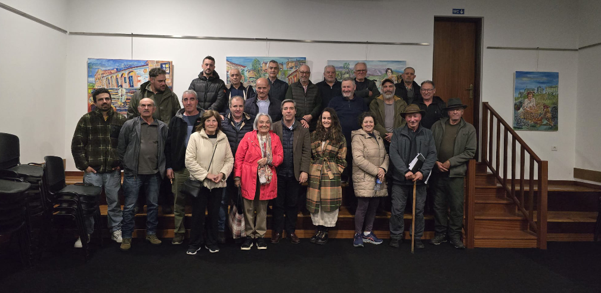

Por um Lar
De um movimento civico à constituição de uma Instituição Particular de Solidariedade Social
para dar resposta às necessidades da comunidade Soajeira
e das populações vizinhas.

O Movimento Cívico e Associativo de Soajo, que congrega todas as estruturas locais da Freguesia de Soajo está desde o final de 2024 a dinamizar um conjunto de encontros, tendo percorrido quase todos os lugares da Freguesia, com o objectivo de criar um Lar em Soajo ( Estrutura Residencial para Pessoas Idosas ).